This C special chapter is a collection-first draft. The current goal is to gather old-exam stems and choices into one usable chapter before full answer verification and teaching-note expansion.
Source file: Intraining exam 100 ข้อ 12 Jan 2026 | Intraining source-preserving stem/options. No official answer key was found in the PDF; keep unanswered until verified. | Review flags: missing_verified_answer_key
Q2. You are on duty as medical oversight. Which patient has indication for air transport?
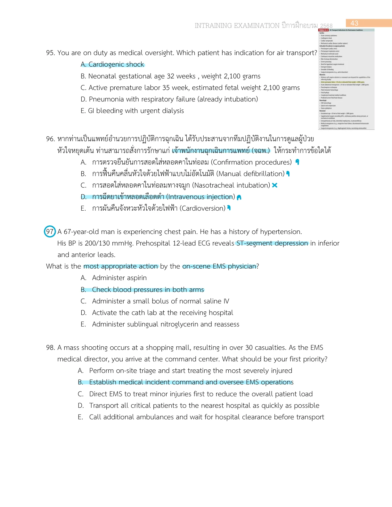
Intraining exam 100 ข้อ 12 Jan 2026, p.44
Source file: Intraining exam 100 ข้อ 12 Jan 2026 | Intraining source-preserving stem/options. No official answer key was found in the PDF; keep unanswered until verified. | Review flags: missing_verified_answer_key
Source file: Intraining exam 100 ข้อ 12 Jan 2026 | Intraining source-preserving stem/options. No official answer key was found in the PDF; keep unanswered until verified. | Review flags: missing_verified_answer_key
Q1. A mass shooting occurs at a shopping mall, resulting in over 30 casualties. As the EMS medical director, you arrive at the command center. What should be your first priority?
Intraining exam 100 ข้อ 12 Jan 2026, p.44
Source file: Intraining exam 100 ข้อ 12 Jan 2026 | Intraining source-preserving stem/options. No official answer key was found in the PDF; keep unanswered until verified. | Review flags: missing_verified_answer_key
Source file: MCQ 2566 combined.pdf | A. Intubation
Reference: Source: MCQ 2566 combined.pdf | p.28
Q4. 30 years old male was stabbed at left chest wall. EMS found a 2x4 cm wound at left parasternum with no pulse, started manual CPR, inserted ETT, and gave adrenaline. As medical director, what additional treatment should be ordered?
Q5. You were medical director to response child with choking, EMS reach to patient was a 5 years old boy, alert, partial speaking and SpO2 95%. What is your order?
Q6. 50 yrs male collision vehicle in stunk in car on sitting position Primary survey can talk ,good conscious Chest pain dyspnea weak radial pulse on palpitation เราเป็นแพทย์EMS ท าไงดี
Q9. EMS dispatcher ordered ALS and BLS system cooperates to take a male 60-year-old who was dyspnea sweating and cold extremities. How long BLS system should take to the patient?
Q10. มีหล ายหน่วยงานเข้ามาในเหตุเดียวกัน เร าเป็นหน่วย EMS มีหน่วย fire/police/ems ต ามหลัก nims สั่ง command แบบใด What is the most appropriate type area command
Source file: รวมข้อสอบ-board-2562-CHULA.pdf | Targeted repair from page 14. Source contains complete choices, but no answer mark was available, so the answer remains needs_review.
Q16. Which of the following is the EMS response development model that considers patterns in the location of calls for the particular time of day, day of week, and time of year; an vehicles are then placed at locations that are most likely to optimize the systemTabiliUZUPSeTQPndUP those anticipated call patterns?
Q22. 16-month old สําลักกล้วย EMS ออกรับยังร้องมีเสียง มา ER - decrease BS ไอไม่มีเสียง เหนื่อย มากขึ้น เริ่มซึม เริ่ม complete upper airway obstruction What is the appropriate next management?
Source file: รวมข้อสอบ-board-2562-CHULA.pdf | Targeted repair from page 36. Source contains complete choices, but no answer mark was available, so the answer remains needs_review.
Q15. ผู้ป่วย car accident อยู่ในรถ ตรวจร่างกายระบบอื่นปกติ แต่มี fracture neck of femur จะเคลื่อนย้ายอย่างไร
รวมข้อสอบ-board-2562-CHULA.pdf, p.17
Source file: รวมข้อสอบ-board-2562-CHULA.pdf | Targeted repair from page 17. Source contains complete choices, but no answer mark was available, so the answer remains needs_review.
Source file: MCQ 2566 combined.pdf | A. Intubation
Reference: Source: MCQ 2566 combined.pdf | p.28
Q2. Burn at dorm, you are in treatment red zone มีผู้ป่วยมา3 คน แต่มีรถambulance 1 คัน ระยะน าส่งรพ 10 km เรียงล าดับการน าส่งผู้ป่วย
MCQ 2566 combined.pdf, p.29
Source file: MCQ 2566 combined.pdf
Reference: Source: MCQ 2566 combined.pdf | p.29
Q3. ญ. 70 ปี DM, HT ญาติเรียก ems ออกรับ ไข้ ซึม v/s BT 38, HR 120, RR 30, BP 80/50, O2 sat 95%, scene ห่างจากรพ. 15 นาที For prehospital setting, which one can decrease mortality
MCQ 2566 combined.pdf, p.29
Source file: MCQ 2566 combined.pdf
Reference: Source: MCQ 2566 combined.pdf | p.29
Q4. Annual report Dispatch 1 Activate 3 Response 10 En route 6 Scene time 10 ให้แก้อะไร
Q1. According to the Emergency Medical Treatment and Active Labor Act (EMTALA) of 1986, hospitals wish ing to transfer a patient to another facility for a higher level of care must do the following prior to transfer ring the patient?
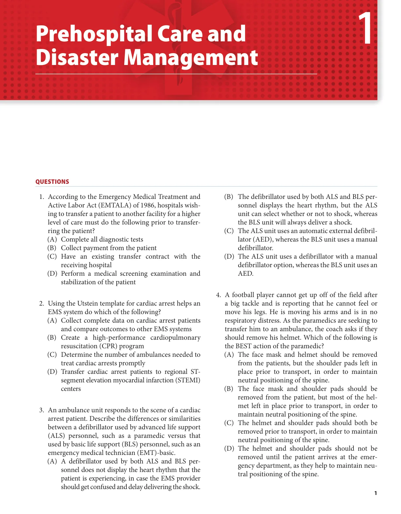
McGraw Chapter 1: Prehospital Care and Disaster Management, p.12
Source file: McGraw Chapter 1: Prehospital Care and Disaster Management
Q3. An ambulance unit responds to the scene of a cardiac arrest patient. Describe the differences or similarities between a defibrillator used by advanced life support (ALS) personnel, such as a paramedic versus that used by basic life support (BLS) personnel, such as an emergency medical technician (EMT)-basic.
McGraw Chapter 1: Prehospital Care and Disaster Management, p.12
Source file: McGraw Chapter 1: Prehospital Care and Disaster Management
Q4. A football player cannot get up off of the field after a big tackle and is reporting that he cannot feel or move his legs. He is moving his arms and is in no respiratory distress. As the paramedics are seeking to transfer him to an ambulance, the coach asks if they should remove his helmet. Which of the following is the BEST action of the paramedic?
McGraw Chapter 1: Prehospital Care and Disaster Management, p.12
Source file: McGraw Chapter 1: Prehospital Care and Disaster Management
Q6. A 10-day-old infant is diagnosed with septic shock and requires transfer from a community hospital to a tertiary care center that is 30 minutes by helicopter or 2 hours by ground ambulance. What factor will deter mine if the child will be transferred by helicopter?
McGraw Chapter 1: Prehospital Care and Disaster Management, p.12
Source file: McGraw Chapter 1: Prehospital Care and Disaster Management
Q8. You have been asked to be the medical director for an upcoming, outdoor, rock concert that is expected to draw a crowd of over 100,000 people. Part of your responsibility includes creating a medical plan in advance of the event to submit to the city EMS agency. As you work to create this plan, you should consider a number of issues. Select the statement that is TRUE from the following options:
McGraw Chapter 1: Prehospital Care and Disaster Management, p.12
Source file: McGraw Chapter 1: Prehospital Care and Disaster Management
Q10. You have been asked to represent the emergency department on your hospital’s disaster planning com mittee. Before the group moves on to updating the hospital disaster plans and organizing simulation exercises for staff, the committee chair has asked that the group first assess how the national and local envi ronment has changed and may affect the likelihood of certain types of natural or man-made disasters. For example, a large chemical plant has recently opened about 1 mile from the hospital, and nowhere in the existing disaster plan is there a strategy for address ing an active shooter scenario. This process of assess ing local threats and prioritizing preparedness efforts specific to your hospital is called a(n):
McGraw Chapter 1: Prehospital Care and Disaster Management, p.12
Source file: McGraw Chapter 1: Prehospital Care and Disaster Management
Q11. You are working in the emergency department when a fire breaks out in a nearby large skilled nursing facility, requiring evacuation of 75 medically complex patients, some with burns and fire-related injuries, directed to your hospital. As your team is triaging and treating the large influx of patients, you realize that most of them require at least short-term admis sion until longer-term care facilities can be identified. Your hospital’s incident command system has been activated. The hospital administration is opening areas of the hospital, calling in extra staff, doubling up patients in in-patient rooms, and modifying a medical ward into an intensive care unit in order to accommodate this large number of admitted patients. This process of finding additional space and expand ing treatment capacity is known as:
McGraw Chapter 1: Prehospital Care and Disaster Management, p.12
Source file: McGraw Chapter 1: Prehospital Care and Disaster Management
Q13. The National Disaster Medical System (NDMS) is a government agency that coordinates deploying highly organized and experienced medical teams into disas ter areas as part of the first response. Relief workers on these teams are expected to be ready to depart to a disaster area within 6 to 12 hours of being activated, and they are expected to be self-sufficient for at least:
McGraw Chapter 1: Prehospital Care and Disaster Management, p.12
Source file: McGraw Chapter 1: Prehospital Care and Disaster Management
Q15. A 30-year-old woman who is 27 weeks pregnant is brought to your emergency department after being found at the site of a bomb explosion at an appliance store. She had been a few yards away from the center of the blast. She initially had ringing in her ears, but now is asymptomatic with normal vital signs and a normal examination.
McGraw Chapter 1: Prehospital Care and Disaster Management, p.12
Source file: McGraw Chapter 1: Prehospital Care and Disaster Management
Q16. A 28-year-old woman is the first of 10 patients brought to your emergency department from an office build ing where there was a suspected nerve agent release. The patient is seizing, has copious frothy sputum and nasal secretions, wheezing, and an episode of diarrhea. In addition to managing her airway, which medications should you administer?
McGraw Chapter 1: Prehospital Care and Disaster Management, p.12
Source file: McGraw Chapter 1: Prehospital Care and Disaster Management
Q17. A congresswoman’s office received a letter in the mail that contains a death threat and a powdery, white sub stance. At least 12 people have been exposed to that letter and present to your emergency department. None are currently experiencing symptoms. The sample is sent to the lab to test for Bacillus anthracis and other substances. At this time, the 12 patients should be given the following treatment:
McGraw Chapter 1: Prehospital Care and Disaster Management, p.12
Source file: McGraw Chapter 1: Prehospital Care and Disaster Management
Q18. In helping to manage an outbreak of an infectious disease (such as an agent of potential bioterrorism), among other things, a public health system should provide which of the following to the public?
McGraw Chapter 1: Prehospital Care and Disaster Management, p.12
Source file: McGraw Chapter 1: Prehospital Care and Disaster Management
Q19. You are treating patients brought from an explosion at a nuclear reactor, all of whom are presumed to have been exposed to radiation. While providing medical stabilization and decontamination, which laboratory test will help you estimate the amount of radiation exposure and prognosticate survival?
McGraw Chapter 1: Prehospital Care and Disaster Management, p.12
Source file: McGraw Chapter 1: Prehospital Care and Disaster Management
Q20. Your emergency department has been notified that it will receive 15 patients from the site of an explosion at a nuclear reactor. Many have serious traumatic injuries, and all have presumed radiation exposure. Your treat ment team has established the appropriate decontam ination, treatment, and post-decontamination areas, with sufficient staff having donned personal protec tive equipment. You are helping to establish the triage process for this mass casualty event. The first patient to arrive from the scene is a 25-year-old woman who was struck in the chest and abdomen with a metal pipe. She is pale, cool, and diaphoretic with a respira tory rate of 36, a thready pulse, and chest wall crepi tus. What is the MOST appropriate initial treatment for her?
McGraw Chapter 1: Prehospital Care and Disaster Management, p.12
Source file: McGraw Chapter 1: Prehospital Care and Disaster Management
อ.ศรัทธา - Medical oversight in EMS 2021.pdf, p.3-4
Original source image preserved from Medical oversight in EMS 2021 p.3-4. Stem/options transcribed from the source image; answer/lesson intentionally not imported.
Reference: Source: อ.ศรัทธา - Medical oversight in EMS 2021.pdf | p.3-4 | paired source pages rendered; answer intentionally not imported.
อ.ศรัทธา - Medical oversight in EMS 2021.pdf, p.12-13
Original source image preserved from Medical oversight in EMS 2021 p.12-13. Stem/options transcribed from the source image; answer/lesson intentionally not imported.
Reference: Source: อ.ศรัทธา - Medical oversight in EMS 2021.pdf | p.12-13 | paired source pages rendered; answer intentionally not imported.
Q3. คำถามที่ 3 ในสถานการณ์นี้ใครทำการปฐมพยาบาล นาย ก ล้มหมดสติ นาย A โทรแจ้ง 1669 และทำ CPR ตามคำแนะนำของ EMD นาย C เป็นอาสากู้ชีพมา CPR และใช้ AED เครื่อง AED สั่งให้ shock นาย C กด shock นฉพ D มาถึงใส่ tube และ พฉพ E กดหน้าอก และนำส่งโรงพยาบาล
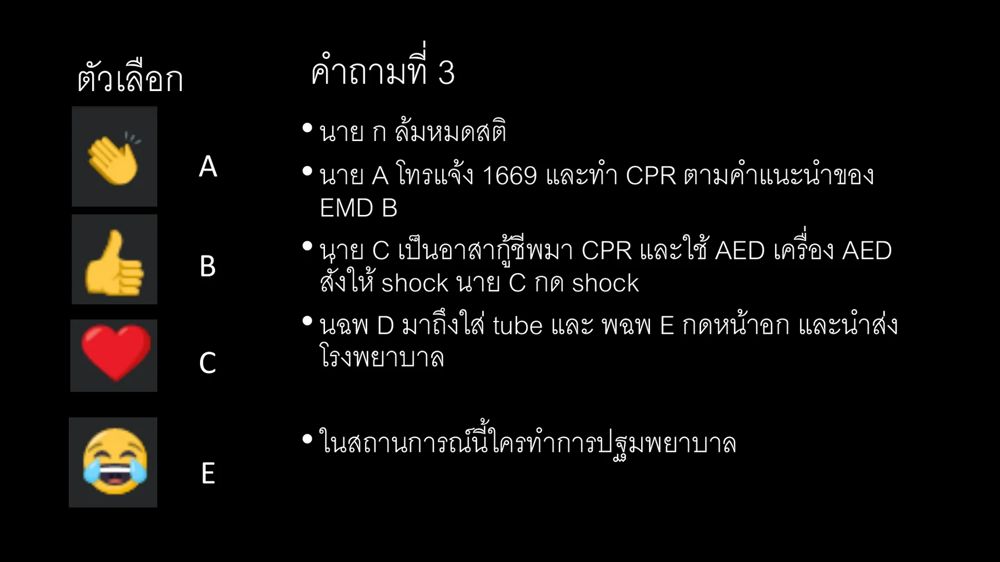
อ.ศรัทธา - Medical oversight in EMS 2021.pdf, p.22
Original source image preserved from Medical oversight in EMS 2021 p.22. Choices transcribed from the source image including the visible A/B/C/E labels; answer/lesson intentionally not imported.
Reference: Source: อ.ศรัทธา - Medical oversight in EMS 2021.pdf | p.22 | paired source pages rendered; answer intentionally not imported.
อ.ศรัทธา - Medical oversight in EMS 2021.pdf, p.55
Paired source image preserved from อ.ศรัทธา - Medical oversight in EMS 2021.pdf p.55. No answer/lesson in this collection pass.
Reference: Source: อ.ศรัทธา - Medical oversight in EMS 2021.pdf | p.55 | paired source pages rendered; answer intentionally not imported.
Q7. คําถามทีÉ 7 หน่วยปฏิบัติการแพทย์ระดับสูง ได้ติดต่อท่านในฐานะแพทย์อํานวยการปฏิบัติฉุกเฉินระดับ พืÊนทีÉเพืÉอขอการอํานวยการตรง ในกรณีผู้ป่วยชายอายุ 65 ปี มีโรคประจําตัวเบาหวาน ความ ดันโลหิตสูง เดิมปกติ ญาติไปพบเดินแล้วล้ม แขนขาด้านซ้ายอ่อนแรงทันที ไม่พูด 10 นาที ก่อนโทรแจ้ง 1669 หน่วยมาตรวจผู้ป่วย พบ BP 180/90 mmHg GCS E3V2M5 Motor power left side grade I, left facial palsy, global aphasia, eye deviate to left side POCT glucose = 120 mg% ท่านจะให้การอํานวยการตรงนําส่งโรงพยาบาลใด
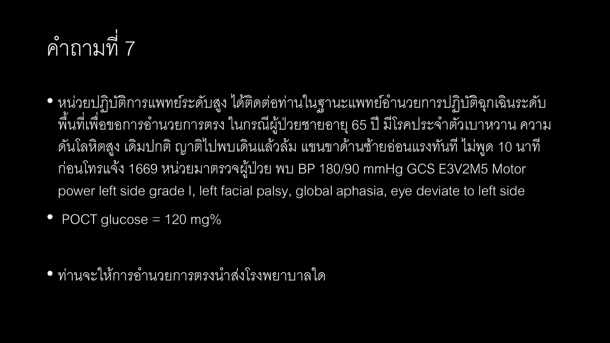
อ.ศรัทธา - Medical oversight in EMS 2021.pdf, p.62
Paired source image preserved from อ.ศรัทธา - Medical oversight in EMS 2021.pdf p.62. No answer/lesson in this collection pass.
Reference: Source: อ.ศรัทธา - Medical oversight in EMS 2021.pdf | p.62 | paired source pages rendered; answer intentionally not imported.
อ.ศรัทธา - Medical oversight in EMS 2021.pdf, p.69
Paired source image preserved from อ.ศรัทธา - Medical oversight in EMS 2021.pdf p.69. No answer/lesson in this collection pass.
Reference: Source: อ.ศรัทธา - Medical oversight in EMS 2021.pdf | p.69 | paired source pages rendered; answer intentionally not imported.
Q9. คําถามทีÉ 9 ท่านเป็นแพทย์ออกเหตุกับทีม ALS ผู้ป่วยหญิง 60 ปี หอบเหนืÉอยนอน ราบไม่ได้ 3 วัน โรคประจําตัวเป็น ischemic cardiomyopathy. ตรวจ ร่างกายทีÉเกิดเหตุT 37 c P 110/min RR 30/min BP 90/60 mmHg O2sat 92% (mask with bag 10 LPM). alert and looked dyspnea. Her breath sound was bilateral fine crepitation. Her BMI was 30 kg/m2 Her monitor ECG showed atrial fibrillation rate 110/min. ระยะทางไปรพ.ประมาณ 10 นาที การรักษาข้อใดเหมาะสมทีÉสุด
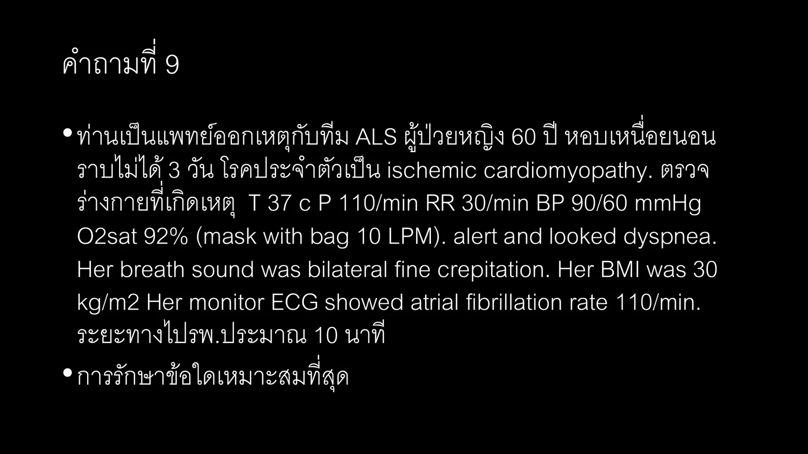
อ.ศรัทธา - Medical oversight in EMS 2021.pdf, p.78
Paired source image preserved from อ.ศรัทธา - Medical oversight in EMS 2021.pdf p.78. No answer/lesson in this collection pass.
Reference: Source: อ.ศรัทธา - Medical oversight in EMS 2021.pdf | p.78 | paired source pages rendered; answer intentionally not imported.
Source image preserved from MCQ 2025 รวมไม่แยกหัวข้อ.pdf p.108. No answer/lesson in this collection pass.
Reference: Source: MCQ 2025 รวมไม่แยกหัวข้อ.pdf | p.108 | full source page rendered; answer intentionally not imported.
Q7. 127. 34 ปี ขับรถชน มี large laceration ที่ scalp EMS ทำ manual in-line BT 37 BP 80/50 RR 8 shallow no stridor P130 O2sat 93 E1V1M2 pupils react to light both eyes Normal chest and abdominal exam What is the most priority management
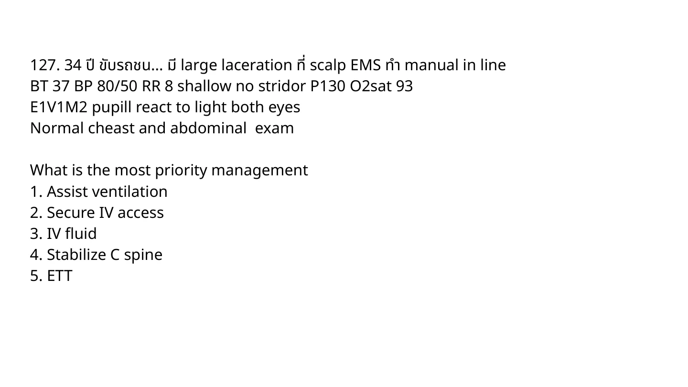
MCQ 2025 รวมไม่แยกหัวข้อ.pdf, p.109
Source image preserved from MCQ 2025 รวมไม่แยกหัวข้อ.pdf p.109. No answer/lesson in this collection pass.
Reference: Source: MCQ 2025 รวมไม่แยกหัวข้อ.pdf | p.109 | full source page rendered; answer intentionally not imported.
Source image preserved from MCQ 2025 รวมไม่แยกหัวข้อ.pdf p.111. No answer/lesson in this collection pass.
Reference: Source: MCQ 2025 รวมไม่แยกหัวข้อ.pdf | p.111 | full source page rendered; answer intentionally not imported.
Q9. 130. 27 YOM motorcycle accident มี penetrating wound 4th ICS, MCL ข้างขวา EMS ทำ three side occlusive dressing มาแล้ว มาถึง ER เป็น tension pneumothorax ข้างขวา what is the appropriate next step?
MCQ 2025 รวมไม่แยกหัวข้อ.pdf, p.112
Source image preserved from MCQ 2025 รวมไม่แยกหัวข้อ.pdf p.112. No answer/lesson in this collection pass.
Reference: Source: MCQ 2025 รวมไม่แยกหัวข้อ.pdf | p.112 | full source page rendered; answer intentionally not imported.
Q10. 144. Accident, left arm wound, active arterial pulsatile bleeding, cap refill 3 sec, ใส่ tourniquet เหนือแผลแล้ว มาถึง ER ยังคง active bleed What next step management
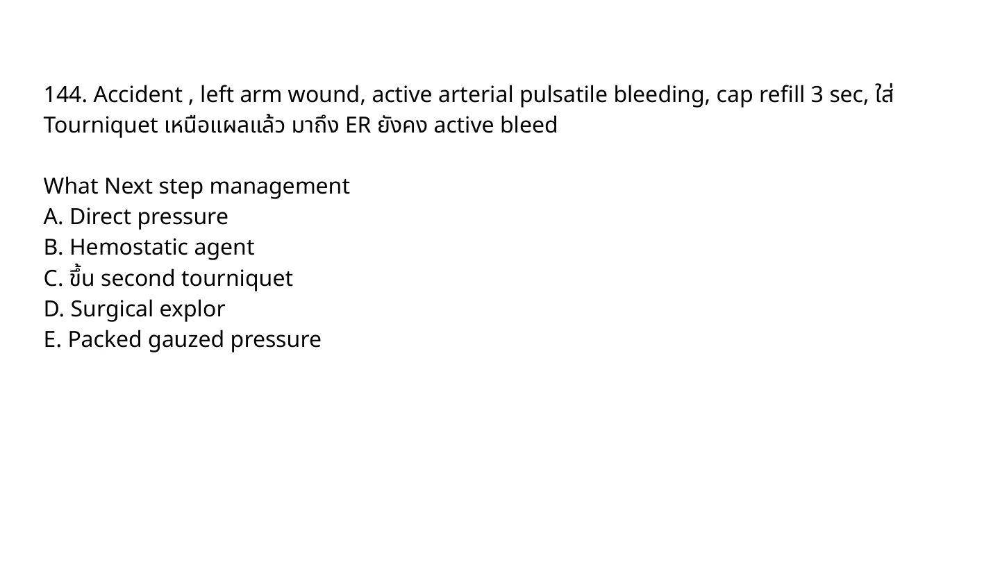
MCQ 2025 รวมไม่แยกหัวข้อ.pdf, p.118
Source image preserved from MCQ 2025 รวมไม่แยกหัวข้อ.pdf p.118. No answer/lesson in this collection pass.
Reference: Source: MCQ 2025 รวมไม่แยกหัวข้อ.pdf | p.118 | full source page rendered; answer intentionally not imported.
Source image preserved from MCQ 2025 รวมไม่แยกหัวข้อ.pdf p.122. No answer/lesson in this collection pass.
Reference: Source: MCQ 2025 รวมไม่แยกหัวข้อ.pdf | p.122 | full source page rendered; answer intentionally not imported.
Q12. 177. 16-month old สำลักกล้วย EMS ออกรับยังร้องมีเสียง มา ER - decrease BS ไอไม่มีเสียง เหนื่อยมากขึ้น เริ่มซึม เริ่ม complete upper airway obstruction What is the appropriate next management?
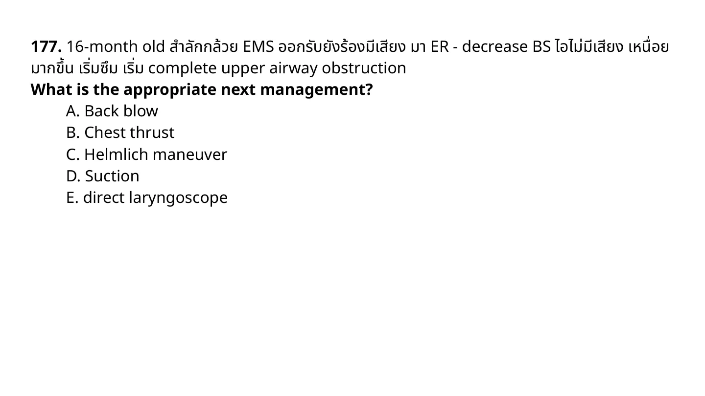
MCQ 2025 รวมไม่แยกหัวข้อ.pdf, p.144
Source image preserved from MCQ 2025 รวมไม่แยกหัวข้อ.pdf p.144. No answer/lesson in this collection pass.
Reference: Source: MCQ 2025 รวมไม่แยกหัวข้อ.pdf | p.144 | full source page rendered; answer intentionally not imported.
Source image preserved from รวมข้อสอบ-board-2562-CHULA.pdf p.16. No answer/lesson in this collection pass.
Reference: Source: รวมข้อสอบ-board-2562-CHULA.pdf | p.16 | full source page rendered; answer intentionally not imported.
Q5. 63. EMS จะทำอย่างไรเพื่อลดเวลา door to balloon time
รวมข้อสอบ-board-2562-CHULA.pdf, p.16
Source image preserved from รวมข้อสอบ-board-2562-CHULA.pdf p.16. No answer/lesson in this collection pass.
Reference: Source: รวมข้อสอบ-board-2562-CHULA.pdf | p.16 | full source page rendered; answer intentionally not imported.
Q6. 64. ขณะที่ BLS ออกเหตุ พบว่าสถานการณ์ out of hand ท่านเป็น Medical director ที่ศูนย์ จะทำอะไร
รวมข้อสอบ-board-2562-CHULA.pdf, p.16
Source image preserved from รวมข้อสอบ-board-2562-CHULA.pdf p.16. No answer/lesson in this collection pass.
Reference: Source: รวมข้อสอบ-board-2562-CHULA.pdf | p.16 | full source page rendered; answer intentionally not imported.
Q7. 65. ผู้ป่วย 65 ปี อ่อนแรงแขนขาขวา 1 ชม มีล้มหัวกระแทก ไม่สลบหมดสติ ตรวจร่างกาย conscious ดี right side hemiparesis grade III ผู้ป่วยอยู่บนชั้น 4 ให้เลือกอุปกรณ์ขนย้ายมา Ambulance
รวมข้อสอบ-board-2562-CHULA.pdf, p.16
Source image preserved from รวมข้อสอบ-board-2562-CHULA.pdf p.16. No answer/lesson in this collection pass.
Reference: Source: รวมข้อสอบ-board-2562-CHULA.pdf | p.16 | full source page rendered; answer intentionally not imported.
Q8. 66. ผู้ป่วย car accident อยู่ในรถ ตรวจร่างกายระบบอื่นพบว่าปกติ แต่มี fracture neck of femur จะเคลื่อนย้ายอย่างไร
รวมข้อสอบ-board-2562-CHULA.pdf, p.17
Source image preserved from รวมข้อสอบ-board-2562-CHULA.pdf p.17. No answer/lesson in this collection pass.
Reference: Source: รวมข้อสอบ-board-2562-CHULA.pdf | p.17 | full source page rendered; answer intentionally not imported.
Q9. 67. Which of the following is the EMS response development model that considers patterns in the location of calls for the particular time of day, day of week, and time of year; vehicles are then placed at locations that are most likely to optimize the system's ability to respond to those anticipated call patterns?
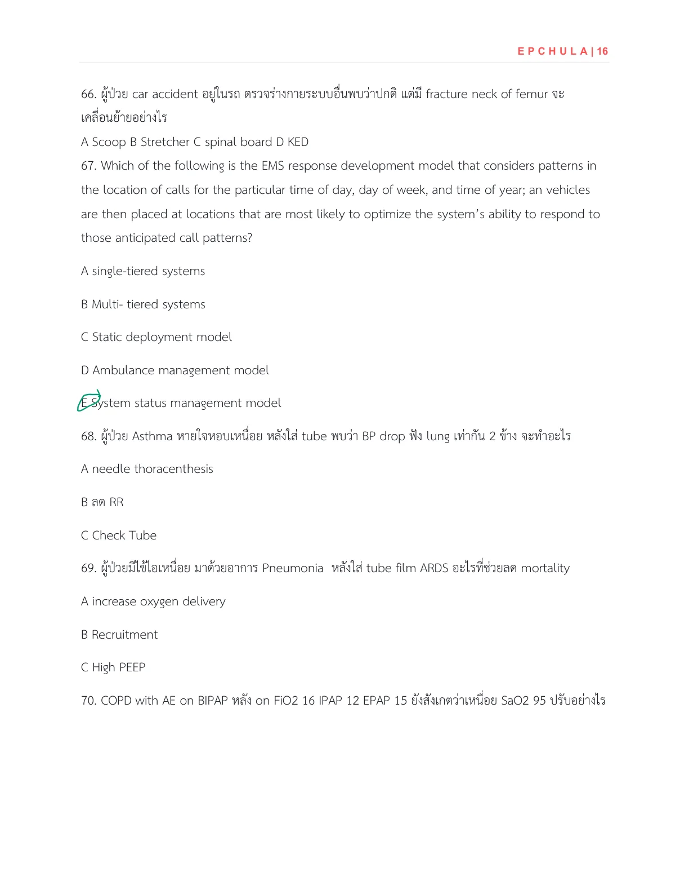
รวมข้อสอบ-board-2562-CHULA.pdf, p.17
Source image preserved from รวมข้อสอบ-board-2562-CHULA.pdf p.17. No answer/lesson in this collection pass.
Reference: Source: รวมข้อสอบ-board-2562-CHULA.pdf | p.17 | full source page rendered; answer intentionally not imported.
Q10. 169. EMS ออกเหตุอุบัติเหตุบนถนน มีคนนอนเจ็บเสียเลือดมาก ท่านไปถึง scene เป็นคนแรก จะทำอย่างไร
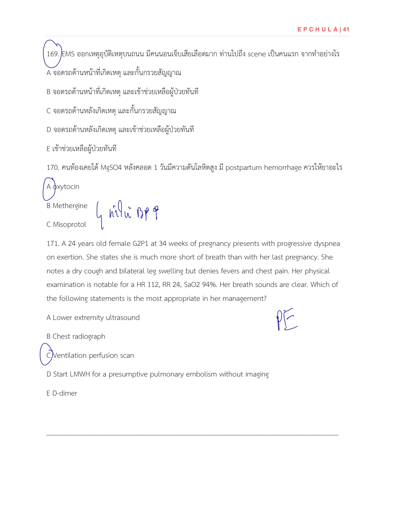
รวมข้อสอบ-board-2562-CHULA.pdf, p.42
Source image preserved from รวมข้อสอบ-board-2562-CHULA.pdf p.42. No answer/lesson in this collection pass.
Reference: Source: รวมข้อสอบ-board-2562-CHULA.pdf | p.42 | full source page rendered; answer intentionally not imported.
Extra MCQ 2566 EMS Source Pages
Q1. 111. คุณเป็น medical director มีแจ้งเหตุเป็น BLS ออกรับ เป็นผู้ป่วยชายอายุ 23 ปี ประสบเหตุโดนยิง ตอนนี้คนโดนยิง - ตำรวจจับแล้ว ไปพบ grasping, no pulse อาสา CPR อยู่ 15 นาที ตอนนี้คุณไปถึง scene ผู้ป่วยไม่มี pulse แต่ยังไม่มี rigor หรือ livor mortis แต่พบแผลถูกยิงแค่ที่หน้าอกด้านซ้ายแค่ข้างเดียว ถามว่าท่านจะทำอะไรต่อ
MCQ 2566 combined.pdf, p.19
Source image preserved from MCQ 2566 combined.pdf p.19. No answer/lesson in this collection pass.
Reference: Source: MCQ 2566 combined.pdf | p.19 | full source page rendered; answer intentionally not imported.
Source image preserved from MCQ 2566 combined.pdf p.19. No answer/lesson in this collection pass.
Reference: Source: MCQ 2566 combined.pdf | p.19 | full source page rendered; answer intentionally not imported.
Q3. 161. 18 yo male เล่นบอล 1 h ตอนเที่ยง แล้ว ... + tachycardia EMS ออกไปดู ตรวจพบ v/s BT 39.6 HR 140 BP 140/100 RR 24 Sat 99 โทรกลับมาถามท่านที่เป็น medical director. What is appropriate initial management?
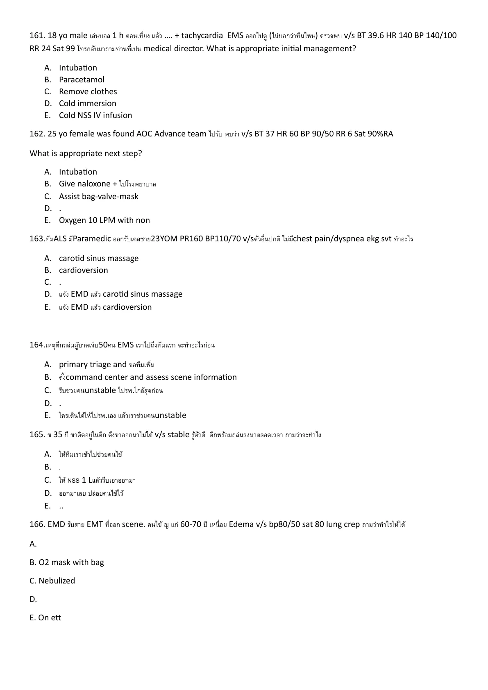
MCQ 2566 combined.pdf, p.28
Source image preserved from MCQ 2566 combined.pdf p.28. No answer/lesson in this collection pass.
Reference: Source: MCQ 2566 combined.pdf | p.28 | full source page rendered; answer intentionally not imported.
Q4. 169. Burn at dorm, you are in treatment red zone มีผู้ป่วยมา 3 คน แต่มีรถ ambulance 1 คัน ระยะนำส่ง รพ. 10 km เรียงลำดับการนำส่งผู้ป่วย: 1 SBP 40 GCS 3 RR6 100% burn 2nd+3rd degree burn; 2 SBP 110 GCS 14 RR 20 superficial burn at arm; 3 SBP 70 GCS 7 RR 8 burn at neck and face
MCQ 2566 combined.pdf, p.29
Source image preserved from MCQ 2566 combined.pdf p.29. No answer/lesson in this collection pass.
Reference: Source: MCQ 2566 combined.pdf | p.29 | full source page rendered; answer intentionally not imported.
Q5. 170. 50 yrs male collision vehicle stuck in car on sitting position Primary survey can talk, good conscious, chest pain dyspnea weak radial pulse on palpitation เราเป็นแพทย์ EMS ทำไงดี
MCQ 2566 combined.pdf, p.29
Source image preserved from MCQ 2566 combined.pdf p.29. No answer/lesson in this collection pass.
Reference: Source: MCQ 2566 combined.pdf | p.29 | full source page rendered; answer intentionally not imported.
Q6. 171. ญ. 70 ปี DM, HT ญาติเรียก EMS ออกรับ ไข้ ซึม v/s BT 38, HR 120, RR 30, BP 80/50, O2 sat 95%, scene ห่างจาก รพ. 15 นาที For prehospital setting, which one can decrease mortality
MCQ 2566 combined.pdf, p.29
Source image preserved from MCQ 2566 combined.pdf p.29. No answer/lesson in this collection pass.
Reference: Source: MCQ 2566 combined.pdf | p.29 | full source page rendered; answer intentionally not imported.
Q7. 172. You are advance EMS team, ออกรับชาย 20 ปี motor vehicle collisions, unconscious, breathing normally, no stridor, BP 120/80, O2 sat 95%, Lung clear, GCS E1V1M1 You plan helicopter transport to trauma center level1, which airway mx is safe
MCQ 2566 combined.pdf, p.30
Source image preserved from MCQ 2566 combined.pdf p.30. No answer/lesson in this collection pass.
Reference: Source: MCQ 2566 combined.pdf | p.30 | full source page rendered; answer intentionally not imported.
Source image preserved from MCQ 2566 combined.pdf p.30. No answer/lesson in this collection pass.
Reference: Source: MCQ 2566 combined.pdf | p.30 | full source page rendered; answer intentionally not imported.
Q10. 179. ALS ออกเหตุ เคส BP drop ซึม เปิด IV แล้ว จากนั้นปรึกษา medical director ผ่านทาง line application เรียกว่า
MCQ 2566 combined.pdf, p.30
Source image preserved from MCQ 2566 combined.pdf p.30. No answer/lesson in this collection pass.
Reference: Source: MCQ 2566 combined.pdf | p.30 | full source page rendered; answer intentionally not imported.
Q11. 180. เคสเด็ก 5 ปี BP 72/40 HR 200 SpO2 88 RA มี retraction DTX 330 mg% EKG SVT
MCQ 2566 combined.pdf, p.31
Source image preserved from MCQ 2566 combined.pdf p.31. No answer/lesson in this collection pass.
Reference: Source: MCQ 2566 combined.pdf | p.31 | full source page rendered; answer intentionally not imported.
Q12. 181. EMS dispatcher ordered ALS and BLS system cooperates to take a male 60-year-old who was dyspnea sweating and cold extremities. How long BLS system should take to the patient?
MCQ 2566 combined.pdf, p.31
Source image preserved from MCQ 2566 combined.pdf p.31. No answer/lesson in this collection pass.
Reference: Source: MCQ 2566 combined.pdf | p.31 | full source page rendered; answer intentionally not imported.
Source image preserved from MCQ 2566 combined.pdf p.31. No answer/lesson in this collection pass.
Reference: Source: MCQ 2566 combined.pdf | p.31 | full source page rendered; answer intentionally not imported.
Q14. 187. มีหลายหน่วยงานเข้ามาในเหตุเดียวกัน เราเป็นหน่วย EMS มีหน่วย fire/police/ems ตามหลัก NIMS สั่ง command แบบใด What is the most appropriate type area command
MCQ 2566 combined.pdf, p.32
Source image preserved from MCQ 2566 combined.pdf p.32. No answer/lesson in this collection pass.
Reference: Source: MCQ 2566 combined.pdf | p.32 | full source page rendered; answer intentionally not imported.
Source image preserved from MCQ 2566 combined.pdf p.28. No answer/lesson in this collection pass.
Reference: Source: MCQ 2566 combined.pdf | p.28 | full source page rendered; answer intentionally not imported.
Q19. 168. You were medical director to response child with choking, EMS reach to patient was a 5 years old boy, alert partial speaking and SpO2 95%. What is your order?
MCQ 2566 combined.pdf, p.29
Source image preserved from MCQ 2566 combined.pdf p.29. No answer/lesson in this collection pass.
Reference: Source: MCQ 2566 combined.pdf | p.29 | full source page rendered; answer intentionally not imported.
Source image preserved from MCQ 2566 combined.pdf p.28. No answer/lesson in this collection pass.
Reference: Source: MCQ 2566 combined.pdf | p.28 | full source page rendered; answer intentionally not imported.
Q21. 167. 30 years old male was stabbed at left chest wall, EMS team helping at scene found 2 x 4 cm wound at left parasternal with no pulse, start manual CPR, ETT was inserted and adrenaline was administration. You were medical director, what is additional treatment to order?
MCQ 2566 combined.pdf, p.29
Source image preserved from MCQ 2566 combined.pdf p.29. No answer/lesson in this collection pass.
Reference: Source: MCQ 2566 combined.pdf | p.29 | full source page rendered; answer intentionally not imported.
Q22. 185. ความสัมพันธ์ระหว่างเวลาการช่วยชีวิตที่ scene และอัตราการเสียชีวิต ควรใช้การศึกษาแบบใด
MCQ 2566 combined.pdf, p.31
Source image preserved from MCQ 2566 combined.pdf p.31. No answer/lesson in this collection pass.
Reference: Source: MCQ 2566 combined.pdf | p.31 | full source page rendered; answer intentionally not imported.
Extra Intraining 2569 EMS / Medical Oversight Source Pages
Q1. 95. You are on duty as medical oversight. Which patient has indication for air transport?
Intraining exam 100 ข้อ 12 Jan 2026.pdf, p.44
Source image preserved from Intraining exam 100 ข้อ 12 Jan 2026.pdf p.44. No answer/lesson in this collection pass.
Reference: Source: Intraining exam 100 ข้อ 12 Jan 2026.pdf | p.44 | full source page rendered; answer intentionally not imported.
Source image preserved from Intraining exam 100 ข้อ 12 Jan 2026.pdf p.44. No answer/lesson in this collection pass.
Reference: Source: Intraining exam 100 ข้อ 12 Jan 2026.pdf | p.44 | full source page rendered; answer intentionally not imported.
Q3. 97. A 67-year-old man is experiencing chest pain. He has a history of hypertension. His BP is 200/130 mmHg. Prehospital 12-lead ECG reveals ST-segment depression in inferior and anterior leads. What is the most appropriate action by the on-scene EMS physician?
Intraining exam 100 ข้อ 12 Jan 2026.pdf, p.44
Source image preserved from Intraining exam 100 ข้อ 12 Jan 2026.pdf p.44. No answer/lesson in this collection pass.
Reference: Source: Intraining exam 100 ข้อ 12 Jan 2026.pdf | p.44 | full source page rendered; answer intentionally not imported.
Q4. 98. A mass shooting occurs at a shopping mall, resulting in over 30 casualties. As the EMS medical director, you arrive at the command center. What should be your first priority?
Intraining exam 100 ข้อ 12 Jan 2026.pdf, p.44
Source image preserved from Intraining exam 100 ข้อ 12 Jan 2026.pdf p.44. No answer/lesson in this collection pass.
Reference: Source: Intraining exam 100 ข้อ 12 Jan 2026.pdf | p.44 | full source page rendered; answer intentionally not imported.
Q5. 99. A 68-year-old woman with a history of hypertension and atrial fibrillation is found unresponsive at home by her daughter. EMS arrives within 20 minutes of the call. On assessment, she has slurred speech, right-sided hemiparesis, and a GCS of 12. Blood glucose is 110 mg/dL. The nearest stroke-capable hospital is 45 minutes away. What is the most appropriate prehospital intervention for this patient?
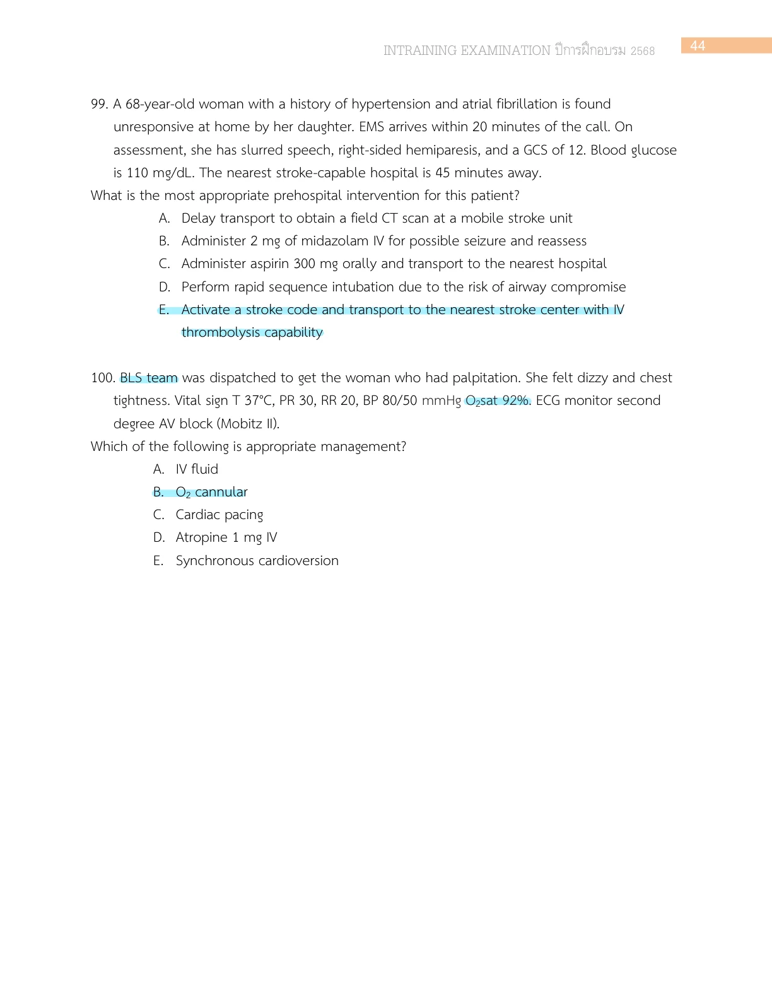
Intraining exam 100 ข้อ 12 Jan 2026.pdf, p.45
Source image preserved from Intraining exam 100 ข้อ 12 Jan 2026.pdf p.45. No answer/lesson in this collection pass.
Reference: Source: Intraining exam 100 ข้อ 12 Jan 2026.pdf | p.45 | full source page rendered; answer intentionally not imported.
Q6. 100. BLS team was dispatched to get the woman who had palpitation. She felt dizzy and chest tightness. Vital sign T 37°C, PR 30, RR 20, BP 80/50 mmHg O2sat 92%. ECG monitor second degree AV block (Mobitz II). Which of the following is appropriate management?
Intraining exam 100 ข้อ 12 Jan 2026.pdf, p.45
Source image preserved from Intraining exam 100 ข้อ 12 Jan 2026.pdf p.45. No answer/lesson in this collection pass.
Reference: Source: Intraining exam 100 ข้อ 12 Jan 2026.pdf | p.45 | full source page rendered; answer intentionally not imported.
Extra EP15 Routed EMS Source Pages
Q1. 63. ออกเหตุ MCI ให้คัดกรอง พบคนไข้นอนหมดสติ no respiration ทำ open airway แล้ว ผู้ป่วยมี spontaneous respiration ถามว่าคนไข้จัดอยู่ในกลุ่มไหน START triage
MCQ 2563 by EP15 Rajavithi.pdf, p.14
Source image preserved from MCQ 2563 by EP15 Rajavithi.pdf p.14. No answer/lesson in this collection pass.
Reference: Source: MCQ 2563 by EP15 Rajavithi.pdf | p.14 | full source page rendered; answer intentionally not imported.
Q2. 71. อยู่ที่ scene เด็กจมน้ำ หายใจ gasping RR 8 ยังมี pulse 110 O2sat 89% scene ห่างจาก รพ. 30 min ถาม next mx
MCQ 2563 by EP15 Rajavithi.pdf, p.15
Source image preserved from MCQ 2563 by EP15 Rajavithi.pdf p.15. No answer/lesson in this collection pass.
Reference: Source: MCQ 2563 by EP15 Rajavithi.pdf | p.15 | full source page rendered; answer intentionally not imported.
Q3. 95. ALS paramedic leader ออกเคสคนไข้ arrest try 2 attempt peripheral IV เปิดไม่ได้ fail ถาม next step mx
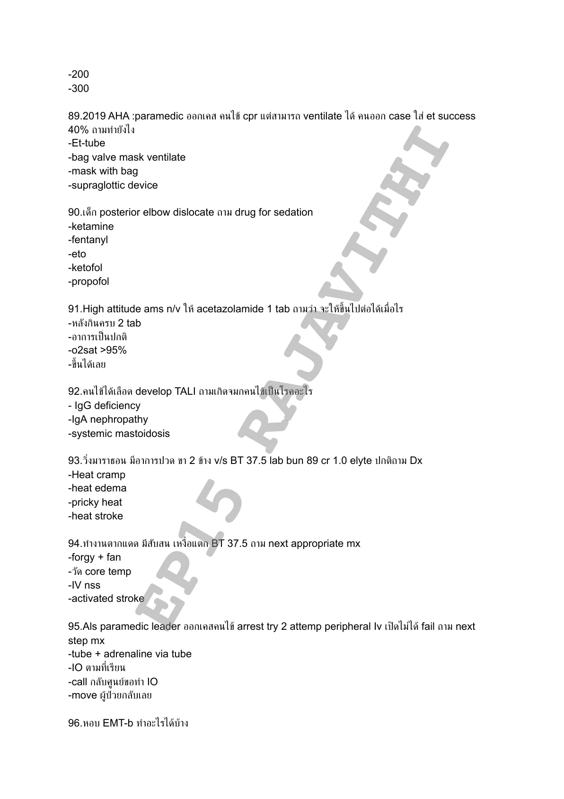
MCQ 2563 by EP15 Rajavithi.pdf, p.19
Source image preserved from MCQ 2563 by EP15 Rajavithi.pdf p.19. No answer/lesson in this collection pass.
Reference: Source: MCQ 2563 by EP15 Rajavithi.pdf | p.19 | full source page rendered; answer intentionally not imported.
Q4. 97. Leader ALS เข้าไปใน scene ที่ยังมีระเบิดอยู่ ขณะกำลังไปช่วยคนเจ็บ ได้ยินเสียงปืน ถาม mx ตอนนั้นจะจัดการยังไง
MCQ 2563 by EP15 Rajavithi.pdf, p.20
Source image preserved from MCQ 2563 by EP15 Rajavithi.pdf p.20. No answer/lesson in this collection pass.
Reference: Source: MCQ 2563 by EP15 Rajavithi.pdf | p.20 | full source page rendered; answer intentionally not imported.
Source image preserved from MCQ-202024.pdf.pdf p.3. No answer/lesson in this collection pass.
Reference: Source: MCQ-202024.pdf.pdf | p.3 | full source page rendered; answer intentionally not imported.
Q6. 41. ท่านเป็น EMS director ทำการวิเคราะห์ข้อมูลระบบ EMS ซึ่งข้อมูลเวร ช บ ด ใน 24 hr และ data stable for 3 month: ทีม ALS 2/2/2, response time average 7.55/7.58/6.52, unit utilization ratio 0.5/0.9/0.4 ท่านจะปรับเปลี่ยนให้เหมาะสมอย่างไร
MCQ-202024.pdf.pdf, p.3
Source image preserved from MCQ-202024.pdf.pdf p.3. No answer/lesson in this collection pass.
Reference: Source: MCQ-202024.pdf.pdf | p.3 | full source page rendered; answer intentionally not imported.
Q7. 42. mass gathering in avenue, สื่อสารอย่างไรในทีมเพื่อให้มีประสิทธิภาพ
MCQ-202024.pdf.pdf, p.3
Source image preserved from MCQ-202024.pdf.pdf p.3. No answer/lesson in this collection pass.
Reference: Source: MCQ-202024.pdf.pdf | p.3 | full source page rendered; answer intentionally not imported.
Q8. 43. EMS ได้รับแจ้งเหตุว่ามีผู้ชาย 5 คน will stop breathing from toxic gas ต้องประกาศโค้ดอะไร
MCQ-202024.pdf.pdf, p.3
Source image preserved from MCQ-202024.pdf.pdf p.3. No answer/lesson in this collection pass.
Reference: Source: MCQ-202024.pdf.pdf | p.3 | full source page rendered; answer intentionally not imported.
Q9. 44. ออกเคส status epilepticus เห็นพาราให้ benzo หลายโดสแล้วยังไม่หยุดชัก ถามว่าเราจะทำอะไรในฐานะ medical oversight
MCQ-202024.pdf.pdf, p.3
Source image preserved from MCQ-202024.pdf.pdf p.3. No answer/lesson in this collection pass.
Reference: Source: MCQ-202024.pdf.pdf | p.3 | full source page rendered; answer intentionally not imported.
Q10. 47. จากการทบทวนการปฏิบัติการ พบว่า response time 9.20 min activation time 3.20 min หากท่านเป็นแพทย์อำนวยการ จะพัฒนาอย่างไร
MCQ-202024.pdf.pdf, p.3
Source image preserved from MCQ-202024.pdf.pdf p.3. No answer/lesson in this collection pass.
Reference: Source: MCQ-202024.pdf.pdf | p.3 | full source page rendered; answer intentionally not imported.
Extra MCQ 2566 Trauma EMS Source Pages
Q1. 110. ผช ได้รับบาดเจ็บที่ต้นแขนขวา มีแผลฉีกเลือดออกมาก ถูกนำส่งที่ ER ด้วยทีม EMS active bleeding (ไม่ได้บอกว่า pulsatile bleeding) PR 120 BP 97/50. next step management
MCQ 2566 combined.pdf, p.18
Source image preserved from MCQ 2566 combined.pdf p.18. No answer/lesson in this collection pass.
Reference: Source: MCQ 2566 combined.pdf | p.18 | full source page rendered; answer intentionally not imported.
Q2. 174. At scene X มี active non pulsatile bleeding, B มี tension pneumothorax ต้องทำอะไรก่อน
MCQ 2566 combined.pdf, p.30
Source image preserved from MCQ 2566 combined.pdf p.30. No answer/lesson in this collection pass.
Reference: Source: MCQ 2566 combined.pdf | p.30 | full source page rendered; answer intentionally not imported.
Source image preserved from MCQ-202024.pdf.pdf p.11. No answer/lesson in this collection pass.
Reference: Source: MCQ-202024.pdf.pdf | p.11 | full source page rendered; answer intentionally not imported.
Extra MCQ 2024 Dispatch / Prehospital Source Pages
Q1. 80. Dispatch male 40 yr loss of conscious at fitness, แจ้งผู้ป่วยไม่หายใจ What is the most appropriate next step management?
MCQ-202024.pdf.pdf, p.10
Source image preserved from MCQ-202024.pdf.pdf p.10. No answer/lesson in this collection pass.
Reference: Source: MCQ-202024.pdf.pdf | p.10 | full source page rendered; answer intentionally not imported.
Q2. 81. Preterm 30 wk normal labor at home Initial management by paramedic and EMS ไม่หายใจ start PPV for 15 sec apnea, no chest move, HR 40 bpm What is the most appropriate next step management?
MCQ-202024.pdf.pdf, p.10
Source image preserved from MCQ-202024.pdf.pdf p.10. No answer/lesson in this collection pass.
Reference: Source: MCQ-202024.pdf.pdf | p.10 | full source page rendered; answer intentionally not imported.
Source image preserved from รวมข้อสอบ-board-2562-CHULA.pdf p.14. No answer/lesson in this collection pass.
Reference: Source: รวมข้อสอบ-board-2562-CHULA.pdf | p.14 | full source page rendered; answer intentionally not imported.
Q5. 53. EMS medical director ต้องต่ออายุทุกกี่ปี
รวมข้อสอบ-board-2562-CHULA.pdf, p.14
Source image preserved from รวมข้อสอบ-board-2562-CHULA.pdf p.14. No answer/lesson in this collection pass.
Reference: Source: รวมข้อสอบ-board-2562-CHULA.pdf | p.14 | full source page rendered; answer intentionally not imported.
Extra Intraining 2026 EMS Source Pages
Q1. 66. You are receiving a call from an EMT who is on scene with a 55-year-old female patient with a chief complaint of drowsiness. On arrival, the patient is unresponsive, stridors and secretion within oral cavity. A palpable pulse is detected. Her initial vital signs are BP 70/45 mmHg, HR 120/min, RR 12/min, and SpO2 85% (RA). What is the proper online medical direction to an EMT for this patient?
Intraining exam 100 ข้อ 12 Jan 2026.pdf, p.30
Source image preserved from Intraining exam 100 ข้อ 12 Jan 2026.pdf p.30. No answer/lesson in this collection pass.
Reference: Source: Intraining exam 100 ข้อ 12 Jan 2026.pdf | p.30 | full source page rendered; answer intentionally not imported.
Source image preserved from Intraining exam 100 ข้อ 12 Jan 2026.pdf p.43. No answer/lesson in this collection pass.
Reference: Source: Intraining exam 100 ข้อ 12 Jan 2026.pdf | p.43 | full source page rendered; answer intentionally not imported.
Extra Pediatric Trauma EMS Source Pages
Q1. 167. ท่านอยู่เวร medical director, Paramedic รับแจ้งจากมารดาเด็ก 3 ขวบมีอาการสำลักหลังเล่นของเล่น 5 นาที ระหว่างทางที่กำลังส่งทีมออกไปรับ ถามอาการพบว่าเด็กยัง response แต่ไอไม่มีเสียง ถามว่า most appropriate advice by phone [MCQ 64]
เด็ก trauma.pdf, p.31
Source image preserved from เด็ก trauma.pdf p.31. No answer/lesson in this collection pass.
Reference: Source: เด็ก trauma.pdf | p.31 | full source page rendered; answer intentionally not imported.
Q2. 28. เด็กถูกปืนยิงมีรอยเลือดออกที่หน้าอกและขาขวา At scene สังเกตว่ามีเลือดพุ่งออกมามากไม่หยุด จะทำอย่างไร [MCQ 62]
เด็ก trauma.pdf, p.50
Source image preserved from เด็ก trauma.pdf p.50. No answer/lesson in this collection pass.
Reference: Source: เด็ก trauma.pdf | p.50 | full source page rendered; answer intentionally not imported.
Q3. A 4-years-old boy falls through a cold pond. His heart rate is 80 bpm. At scene, he is intubated and brought to you in ED. You found he is asystole and body temperature is 20 C. The team starts CPR. What is the appropriate next step to manage him? [MCQ 61]
เด็ก trauma.pdf, p.59
Source image preserved from เด็ก trauma.pdf p.59. No answer/lesson in this collection pass.
Reference: Source: เด็ก trauma.pdf | p.59 | full source page rendered; answer intentionally not imported.
Q4. A 6 year old boy is rescued from a burning house. Upon arrival at emergency department, he is still conscious but has difficulty in breathing. His entire face is markedly swelling and stridor is noted. You and your chief resident try to intubate him but fail for 3 attempts and he seems to be drowsier GCS E3V2M4. His oxygen saturation is 76% with BMV ventilation. Which is the appropriate management in this patient? [MCQ 61]
เด็ก trauma.pdf, p.63
Source image preserved from เด็ก trauma.pdf p.63. No answer/lesson in this collection pass.
Reference: Source: เด็ก trauma.pdf | p.63 | full source page rendered; answer intentionally not imported.